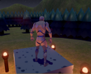

Game Development Foundations at The AIE
I am currently on my way to getting a Certificate III in Information, Digital Media and Technology ICT30115. If everything goes to plan then I will be finished the course on the 4th of October 2018 and recieve my Cert III soon after.
Because of this course I am now capable of using Unity, C#, HTML and CSS. I have also been given a much wider understanding of the games industry and the process of game Development. I was given the chance to work as part of a group in a team project and that was an amazing opportunity, both for the software I learnt to use as well as the team communication skills.
Game Art Foundations at The AIE
I am also doing a 2 year VETis at my school through The AIE that, if I do well in will award me a Certicate III in Screen and Media CUA31015. This VETis conludes at the end of 2019.
VCE Computing: Software Development
I will begin this school subject in 2019.